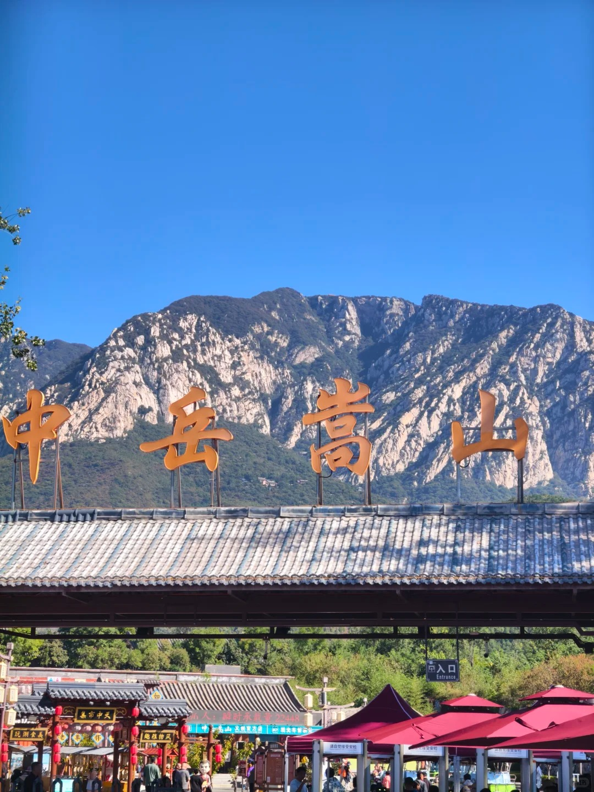
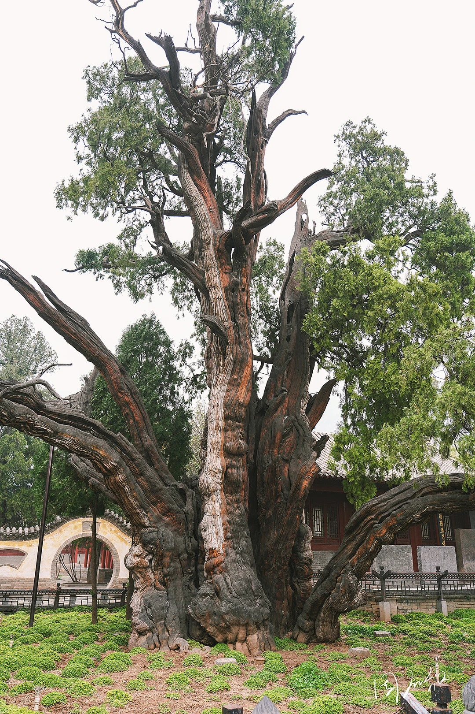
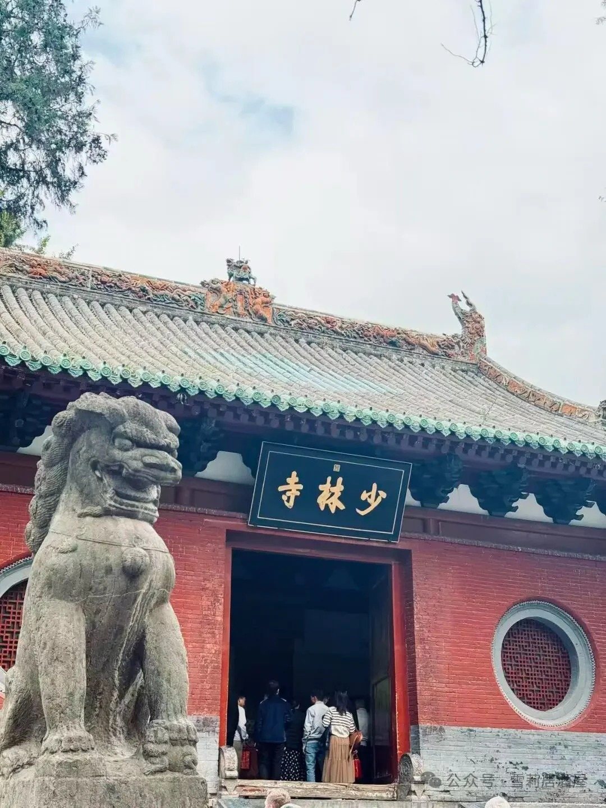
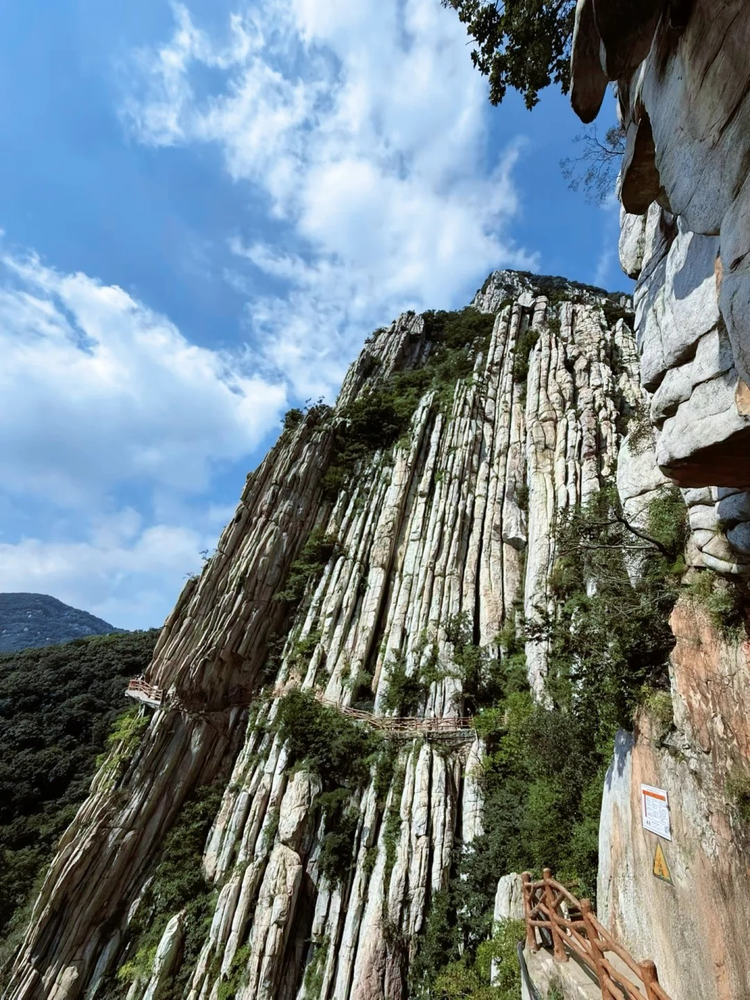
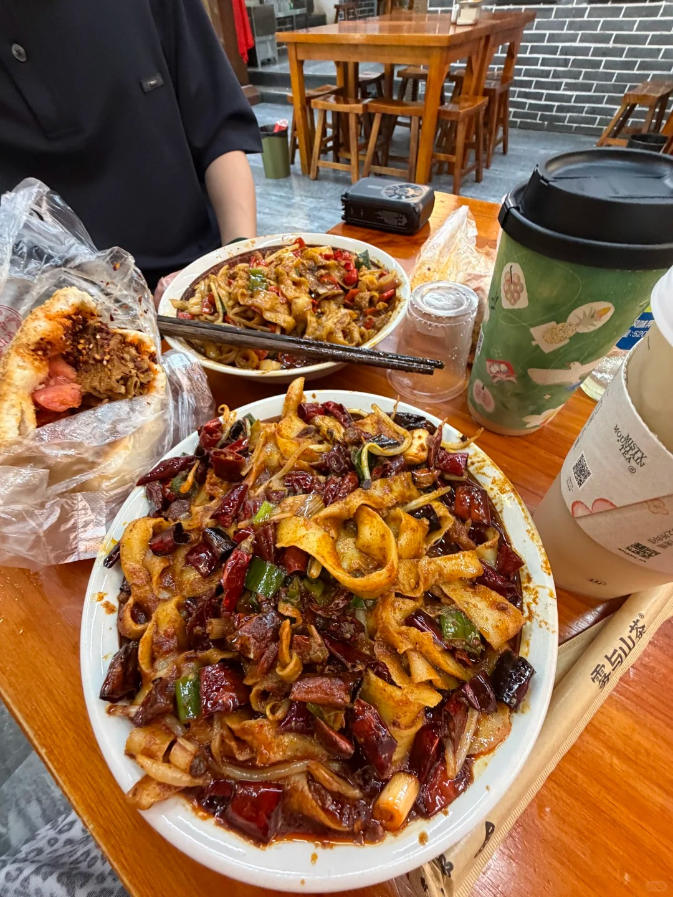
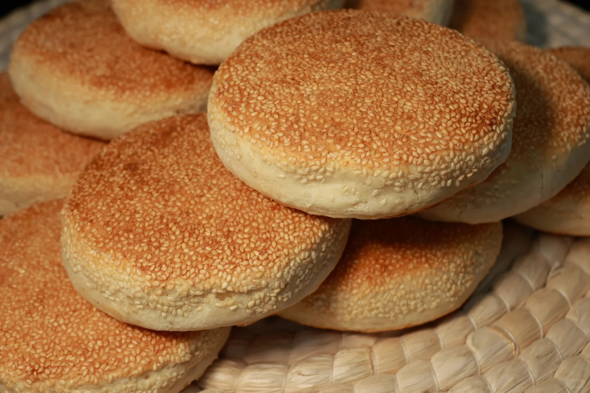
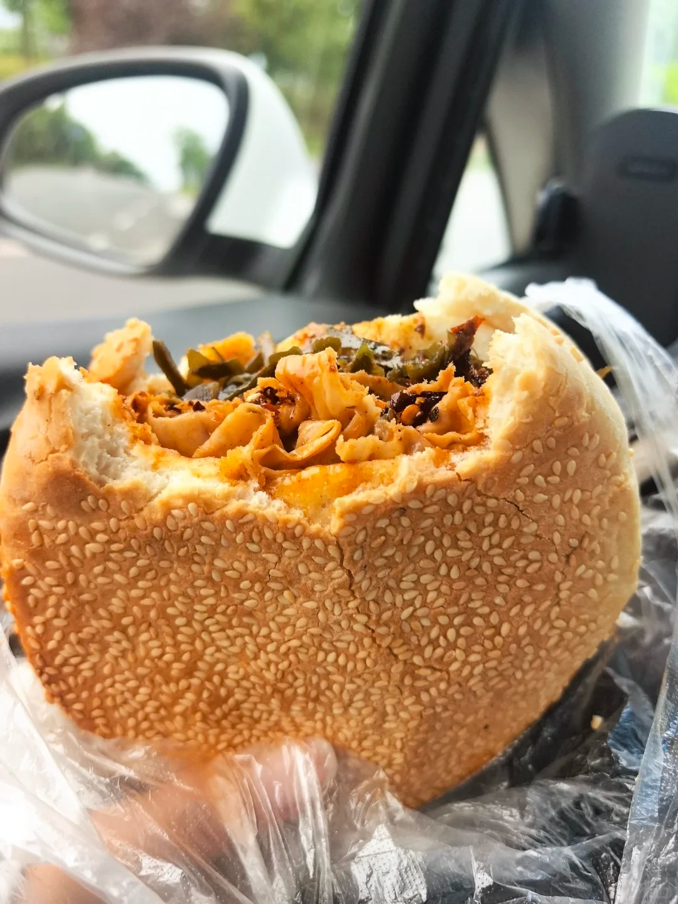

婚礼在 11 月 16 日，地点在登封市石道乡苗庄村。
如果想借着周末提前来玩，登封是一座被嵩山半抱着的小城，山、寺、书院、面食都挨得很近。来都来了，看看瞅瞅吧——世界那么大，登封那么中，到了登封，这些可少不了。
五岳之中岳，分太室山与少室山。它不是一眼惊艳的山，而是越走越觉得厚重——石头、松树、庙宇、碑刻，一层一层叠在一起。11 月山上风大，记得带外套。

进了嵩山景区的门，没几步就是嵩阳书院，它逛起来就不累（放一张将军柏照片）。中国古代四大书院之一，院落不大，古柏很老。走进去会不自觉地放轻脚步，是那种适合慢慢看、慢慢坐的地方。

嵩山五乳峰下，禅宗祖庭。常住院一进一进往里走，再往西是塔林，不同朝代的古塔安静地立在山坡上。如果时间只够看一处，就来这里，早上人少、光也好。

也叫少林寺后山，可以坐索道直接到三皇寨反着逛。在少室山西麓，以险著称。栈道贴着崖壁修，脚下是深谷，抬头是直上直下的岩壁。体力好的话，可以和少林寺连成一条线走，穿一双好走的鞋。

登封的刀削面别具一格：不带汤，全是炒的。现在年轻人的口味爱吃辣，时下最流行的是椒炒刀削，一口辣气上头，怎能不上头。

烩面是带汤的，刀削面也是带汤的？不，登封的刀削面从不带汤！
芝麻盖烧饼烤得焦香，一面满是芝麻；夹上刚烤好的串，就是烧饼夹串。热馍、油串、芝麻香，一口下去又香又满足，逛夜市时边走边吃刚好。


穿衣建议：11 月登封昼夜温差大，山上风硬，外套和舒适的鞋是必需品。
如果行程允许，欢迎提前来玩耍。多住一晚，山里的风、街边的面，都不会让你白来。